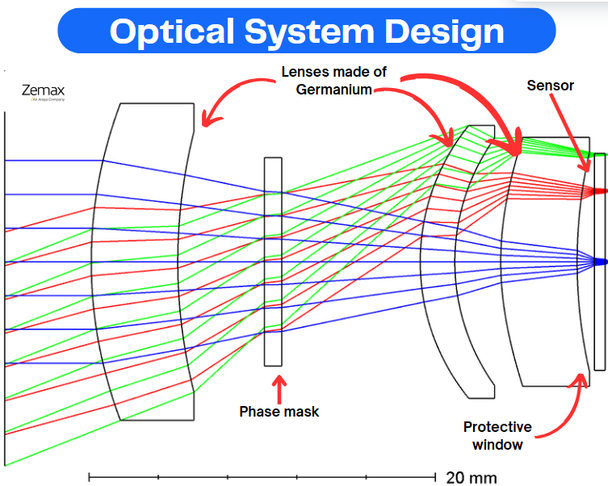

Justification
During the image simulation and processing phase of the MOSAIC project, which I participated in, we carefully evaluated different technological solutions to optimize imaging performance. By consulting relevant scientific articles, we identified that the Cubic and Exponential Phase Masks provided the best results, leading us to implement both in our simulations.
Additionally, leveraging knowledge from signal processing coursework, we applied an Average Wiener Filter for image reconstruction. This choice was based on its effectiveness in minimizing the Mean Squared Error (MSE) within a given object distance range, making it the most suitable filtering approach for our specific imaging conditions.
The optical and computational aspects of the system are closely integrated: the use of a phase mask extends the depth of field optically, while post-processing with Wiener filtering enhances the image quality. This combination allows for better performance than what either technique could achieve alone.
In this phase of the project, I specifically contributed to the co-design process by working at the interface between optical simulation and image processing. After the optical system was modeled in Zemax, we extracted the Point Spread Functions (PSFs) and I used them in MATLAB to simulate the final image formation process. This allowed us to assess how the optical aberrations introduced by the phase mask would affect the image quality, and to test whether our reconstruction method (Wiener filtering) could compensate for those distortions.
Through these simulations, I helped demonstrate the feasibility of using a phase mask in combination with computational post-processing as a viable solution to extend the depth of field while maintaining acceptable image quality. This integration of optical and digital techniques was key to achieving the project’s performance goals.
Proofs
